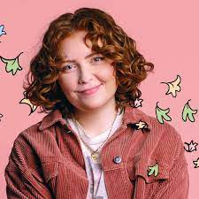

Bem-Vindo

Seja bem-vindo ao site criado por Leandro Moraes, onde você pode encontrar tudo sobre a famosa série da Netflix, Heartstopper, inspirada em uma série de quadrinhos de mesmo nome. Aproveite o website.
Criadora
Alice Oseman é a criadora de Heartstopper. Ela é uma autora e ilustradora inglesa de ficação para jovens adultos. A autora trabalhou por anos nas ideias iniciais sobre Nick e Charlie(protaginistas de Heartstopper) e finalmente, em 2011, começou a lançar Heartstopper em formato de web comic(qadrinhos para internet). Após alguns anos, em 2013, ela conseguiu lançar o primeiro volume de Heartstopper para ser vendido fisicamente. O sucesso de sua obra atingiu o mundo todo e acabou se tornando uma série da Netflix, conseguindo ocupar o lugar de uma das maiores séries com o tema LGBTQIA+.